[ espaço para foto profissional
do espaço kids ]
do espaço kids ]
Espaço kids com monitoras
Ambiente climatizado e monitorado para as crianças brincarem enquanto os adultos curtem a mesa em paz.
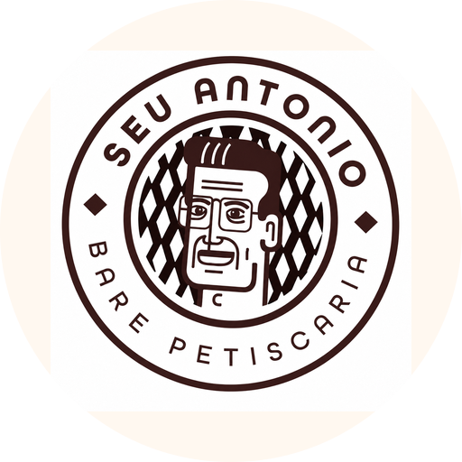
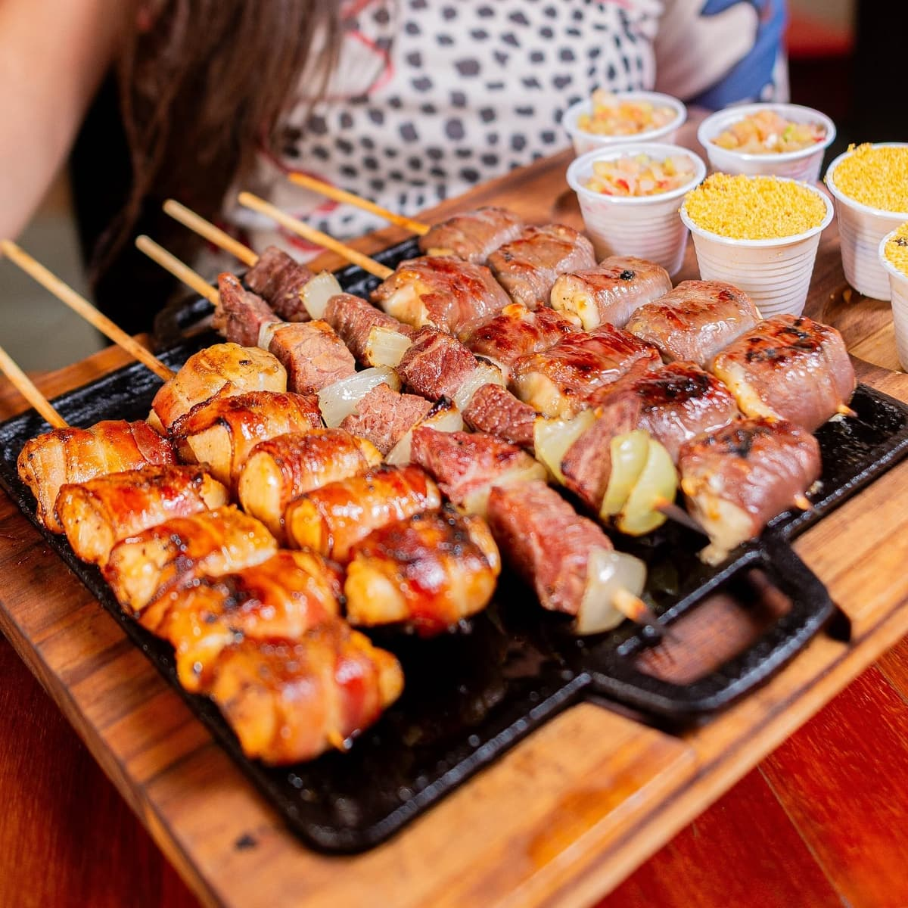
Boteco raiz · Litoral do Janga
Comida de boteco com afeto, drinks caprichados e um espaço kids que todo mundo aprova. Seu Antônio é o point daqui.
A casa
O Seu Antônio nasceu para ser o bar do bairro — aquele de mesa cheia, cerveja gelada e criança correndo em paz. Sabor de casa com a energia da praia logo ali.
A cozinha tem raízes na tradição nordestina, com influência paraibana, e a mão dos donos aparece no salão: gente que recebe você pelo nome e senta pra saber se tá tudo bom.

Por que o Seu Antônio
Espaço kids com monitoras, banheiros climatizados, atendimento que recebe você pelo nome. E a comida? Caldinho de camarão que é sucesso, espetinho na medida certa e aquele drink que vira o destaque da noite.
Ambiente climatizado e monitorado para as crianças brincarem enquanto os adultos curtem a mesa em paz.

Explosão, Melancita, Bruma e a caipirinha da casa: drinks autorais bem-feitos, do tipo que vira o destaque da noite.
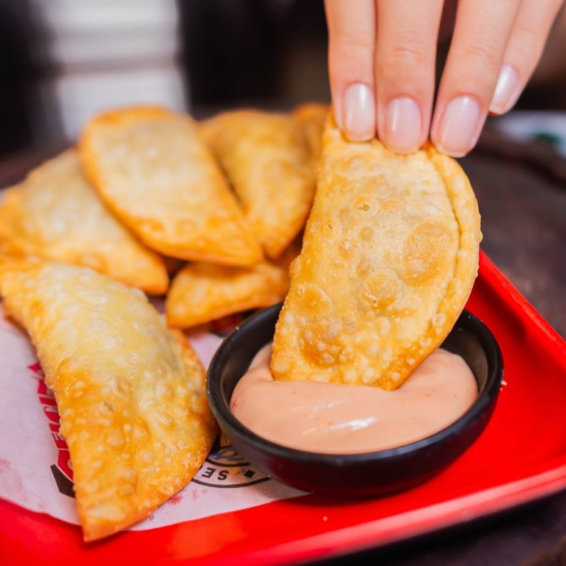
Petisco quentinho, frutos do mar frescos e a cozinha paraibana que abraça: peixe com fritas, rubacão e o caldinho que todo mundo pede.
Cardápio
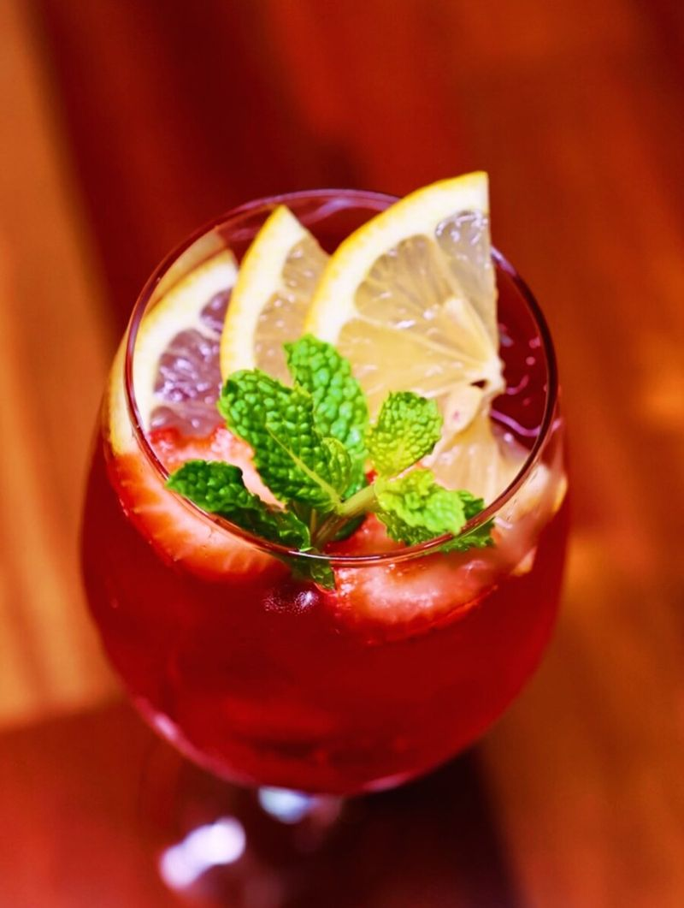
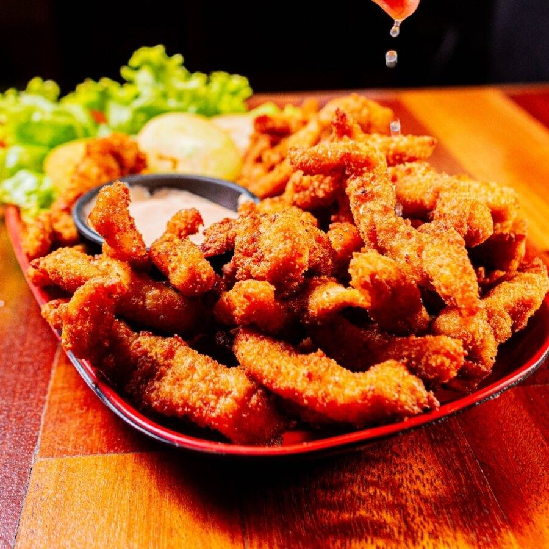
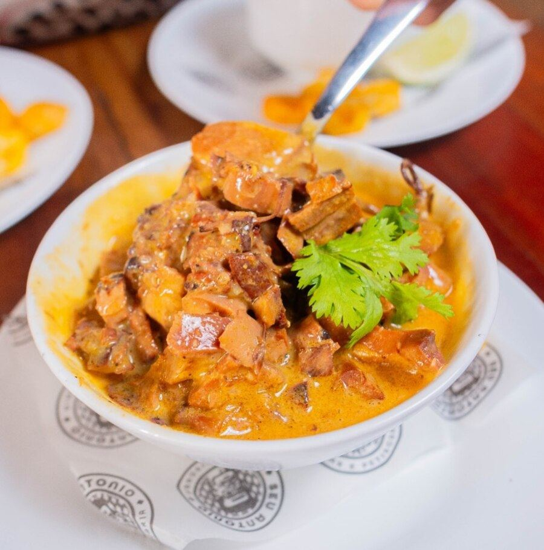
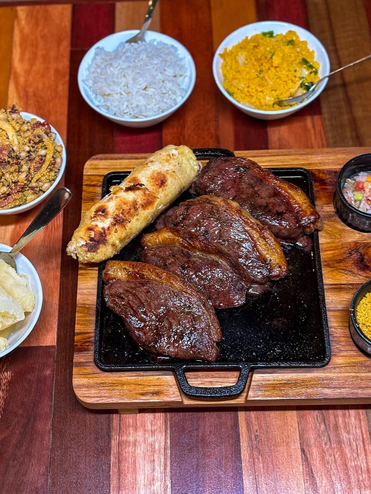
Novidade
Happy Hour
16h – 20h
Todo dia, das 16h às 20h, o happy hour do Seu Antônio tem preço de bairro e cerveja no ponto.
A semana toda tem motivo
Valores e itens promocionais podem mudar. Confirme a promoção do dia pelo WhatsApp.

Todo dia tem
Sempre tem alguém no palco pra puxar o repertório — do pagode ao rock, do forró ao brega.
Pop rock, samba, pagode, forró, brega, sertanejo e o que a galera pedir. Couvert artístico de R$ 15 nos dias de show.
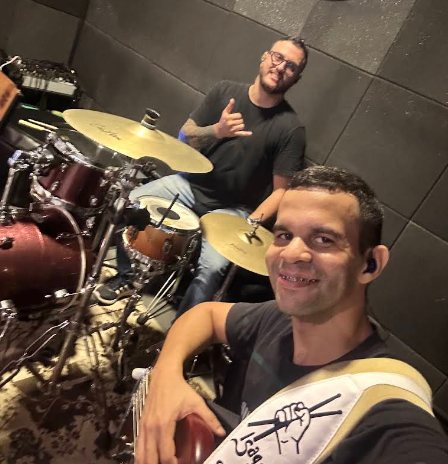
O clima da casa
Drink na mão, petisco na mesa, música rolando e a galera reunida. É mais ou menos assim toda noite.
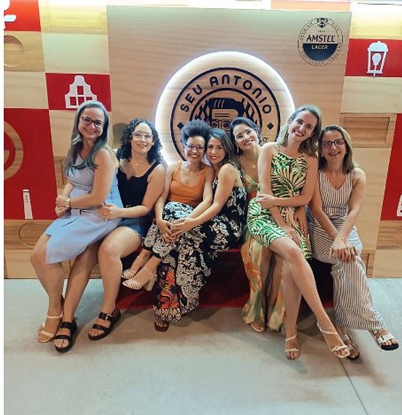
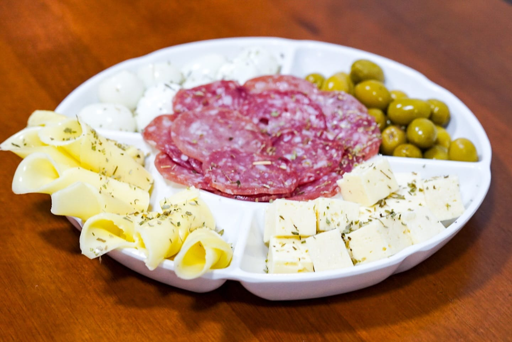
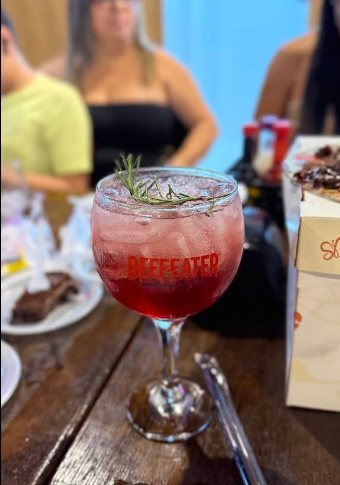
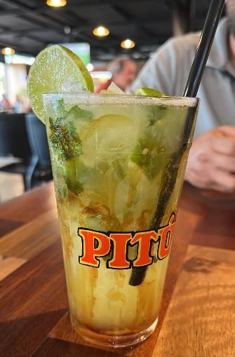

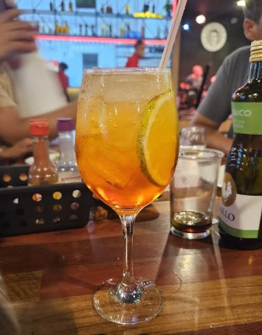

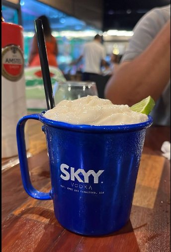
Quem vem, volta
O melhor drink da minha vida. Voltei só por causa dele.
Levei as crianças e consegui relaxar de verdade. O espaço kids tem monitoras o tempo todo.
Cerveja geladíssima e atendimento rápido mesmo com o bar cheio. Virou nosso ponto.
No salão, o atendimento tem nome: Mirela, Sara, Gabriel, Matheus e Demétrius — sempre citados pelo nome nas avaliações.
Trechos de avaliações reais de clientes no Google.Onde a gente fica
Todos os dias, das 16h à meia-noite
Ao falar com a gente pelo WhatsApp, você compartilha nome e telefone apenas para combinarmos sua reserva ou tirar dúvidas. Não usamos esses dados para mais nada nem repassamos a terceiros.
Litoral norte de Paulista
Bem na Av. Dr. Cláudio José Gueiros Leite, a via principal à beira-mar. Fácil de achar, com estacionamento na rua.